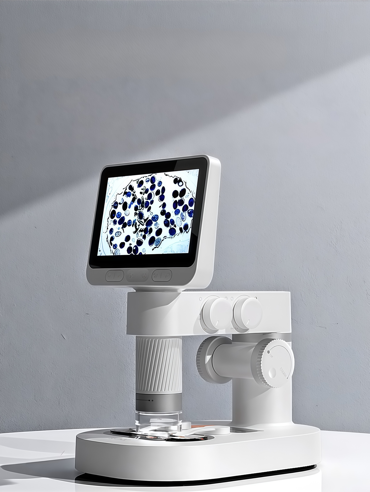
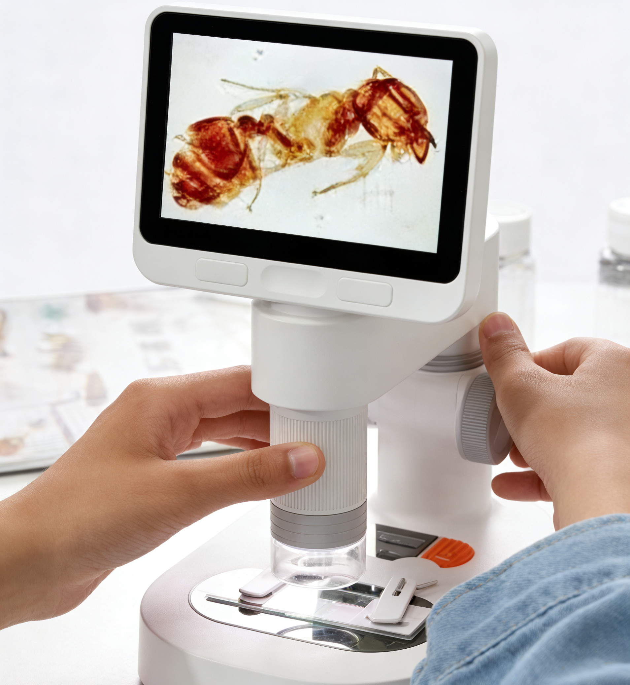
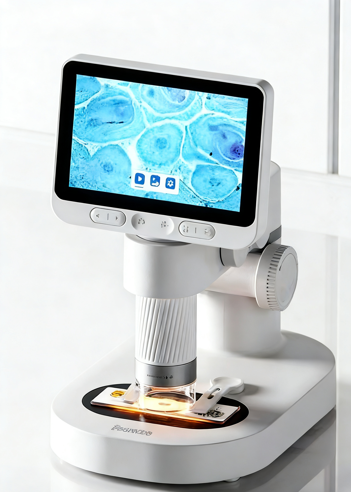
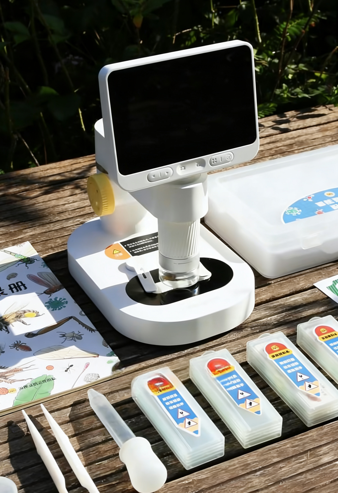
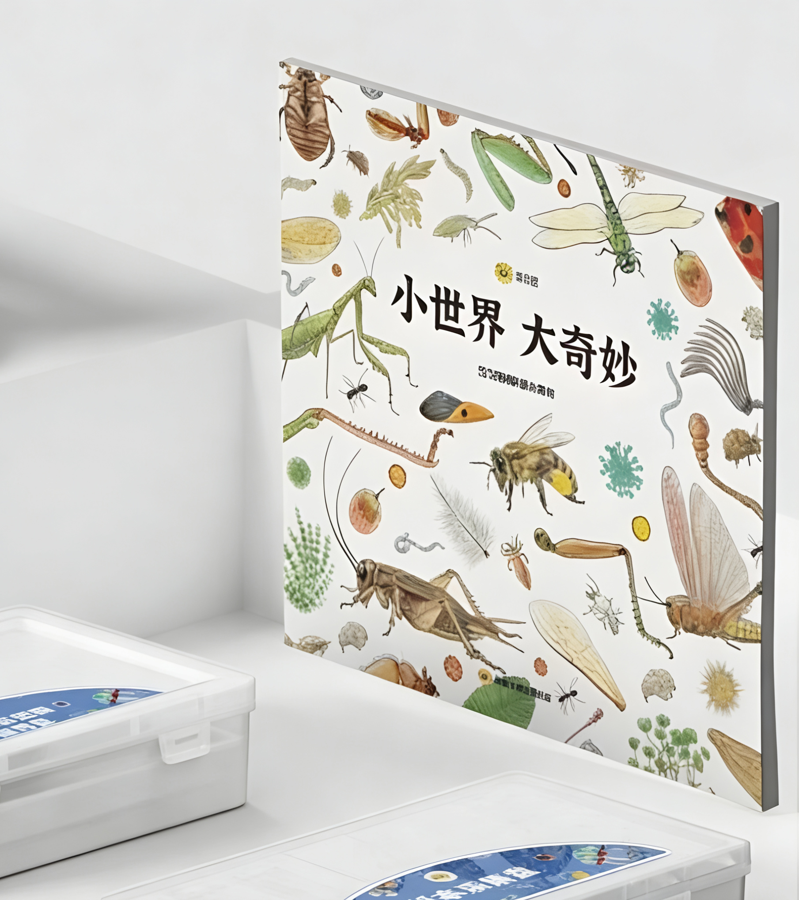
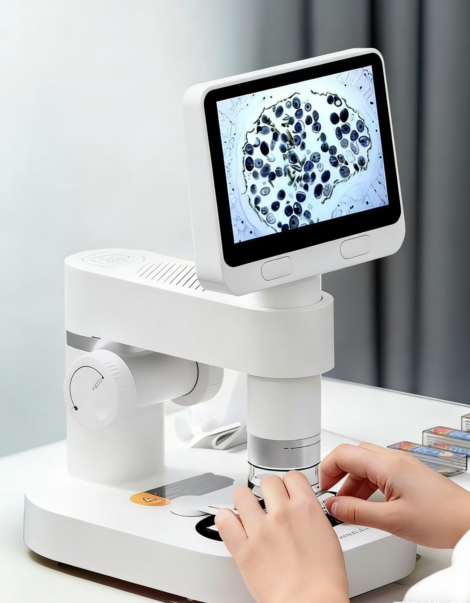

6:08
显微镜使用教程
从开机、调焦到样本放置，完整演示显微镜的基础使用流程。
这里展示与显微镜相关的教学和演示视频，帮助你掌握显微镜使用和样本观察全流程。

从开机、调焦到样本放置，完整演示显微镜的基础使用流程。

通过真实蚂蚁标本观察画面，展示显微镜下的细节变化与调节过程。

结合细胞样本成像画面，演示观察步骤与异常显示效果。

展示显微镜在户外环境中的便携探索玩法，适合自然观察与采样体验。

结合配套书籍与载玻片盒，介绍观察材料与延伸阅读资源的搭配使用方式。

从样本放置到自制载玻片，演示完整观察步骤与屏幕成像过程。